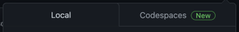
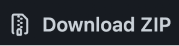
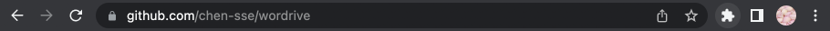
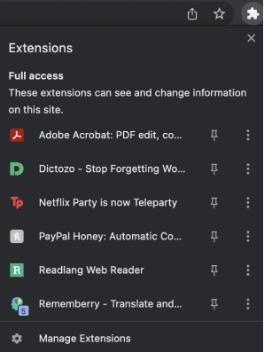
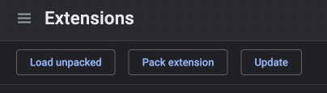
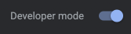
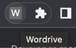
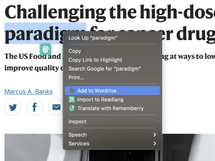

Introduction
I’ve taken German since the 6th grade, and loved the language and the process of learning itself; part of this process was meeting people who found just as much joy and reward in the challenge, and the two programmers who reached out about this project were actually friends I’d studied German with!
Collaboration
I took the design initiative on this, but the people who conceptualized and made it actually come to life are Aaron Z. Zhu, Columbia ‘25 studying Computer Science and Linguistics, and Andrew S. Chen, Stanford ‘25 studying Mathematics and Computer Science after developing the Chen Method for language-learning! They were enthusiastic to get their hands dirty when learning the nuances of design, and I definitely encourage you to take a look at their work.
Project Plan
(Software Requirements Specification given to me when onboarded)
Overview
People who want to learn new vocabulary or jot down words need an easy way to save and keep track of the notable words and phrases they come across. Unfortunately, the leading browsers and browsing tools do not offer users an efficient way to do this. Wordrive solves this problem by helping users save words quickly and with minimal interruption to their reading. The extension is intended to be open-source software.
Intended Audience
The intended audience is Google Chrome users, particularly those who read on their browser and are interested in boosting their retention of vocabulary or keeping track of new words they learn.
Functionality
Users should be able to:
- highlight a word or phrase on a web page and save it
- review the list of words they have saved
- manually enter a word (not through highlighting)
- remove words from their current list
- access a history of all words added to the list
- access the URL(s) of the page that the word came from
- export words to documents
- access the original context(s) that the word existed in, without needing to access the URL
- for foreign languages, resolve ambiguity between similar words
*Italics indicate potential functionality specifications for the future
Platform
The Chrome extension will be developed locally, using APIs made available by Google Chrome, and then published to the Google Web Store.
Development Responsibilities
Andrew S. Chen and Aaron Z. Zhu will be developing the software.
Functional Requirements
Users should be able to:
- highlight the text on a block of text they are reading
- review the words they have saved
User Interfaces
Front-end software: Google Chrome, Chrome Extension UI
Hardware Interfaces
Any operating system which runs Google Chrome
Performance, Safety, and Security Requirements
None listed so far
Technologies Used
Web development: HTML, CSS, JavaScript, JavaScript libraries
Wordrive is, in all its functionality:
-
1. open source
- It is not a ‘marketable’ application in the traditional sense; there are no user upgrades or transactions (there are no ‘premium’ accounts, for example); users should not feel like they are using a tool made by a corporation.
- It is intended to be democratizing and free-to-use.
-
2. for reference and tracking more than studying
- It is not intended to be used for flashcards or rote memorization.
- It does not display entire word definitions; instead, it links users to reference materials and the sites on which they saved their words.
-
3. bookish
- It will be of greatest interest to students — of literature and foreign languages especially — avid readers, and language learners.
-
4. intelligently energetic
- It is smart, powerful, accessible, but not overbearingly flashy or conspicuous — it aids a user’s learning experience rather than takes over it.
Preliminary Competitive Analysis (Brief)
Lo-fi Frames
Initial Iterations
Set 1
Set 2
Final Prototype
Prototype To-Size
Run-Through
Annotated Features
Access
How to download Wordrive:
1. Head to https://github.com/chen-sse/wordrive
2. Click the green <> Code Button
a. In the Local Tab , select Download ZIP
3. Click the Extensions Button
a. Select Manage Extensions at the bottom
4. Select Load Unpacked
a. Make sure Developer Mode is on
5. Select the file downloaded from Step 3a
a. *Make sure it’s been unzipped!
6. Wordrive should appear as one of your Extensions now!
How to use Wordrive:
1. Click the Extensions Button
a. Select the Pin icon to pin Wordrive
b. Wordrive icon should now appear next to Extensions icon
2. Select any word from a site, right-click, and Add to Wordrive
3. Selected word should now have appeared in the Wordrive extension!